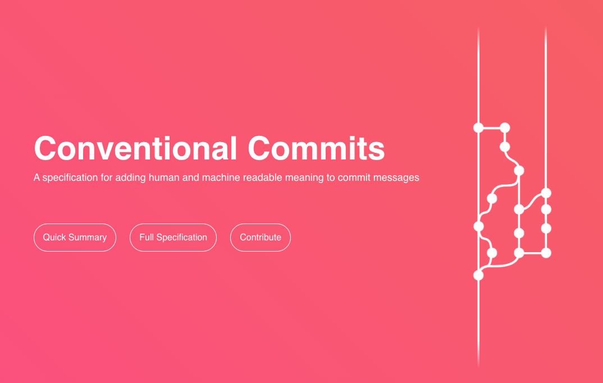

Boas práticas
1
/3
·
Comunicação clara nos commits
Comunicação clara nos commits
>
Conventional Commits:
uma convenção simples de mensagens de commit que segue um conjunto de regras e ajuda os projetos a terem um
histórico de commit explícito e bem estruturado
.
